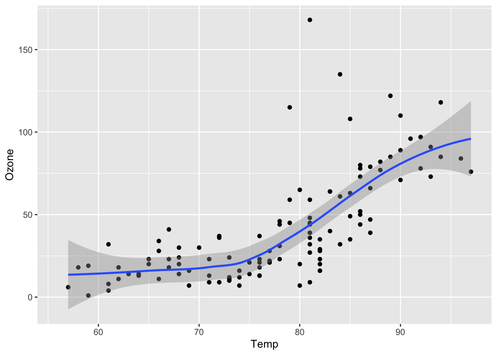

1 + 1Starting with quarto
quarto
code
website
how to start with quarto for documentation
Intro:
Since the appearance of quarto, perhaps it would be more effective to write all in .qmd files cos of its advantages,
- images can be added easily and automatically
- img captions
- code writing and
- compatible with Zotero bibliography (for word, Rstudio and quarto)
- Almost same code/outcome flexibility as Mkdocs code package.
- Qmd files can be opened in vs code directly and updates instantaneously as I write for color copy/paste code.
- Visual mode is very convenient, as I can copy paste format directly to word (no need to convert/apply format code to word format).
Quarto
Quarto enables you to weave together content and executable code into a finished document. To learn more about Quarto see https://quarto.org .
Running Code
When you click the Render button a document will be generated that includes both content and the output of embedded code. You can embed code like this:
You can add options to executable code like this
[1] 4The echo: false option disables the printing of code (only output is displayed).
you can write chunk options in the body of a code chunk after #|, e.g.,

for more info see here.
Seattle Precipitation by Day (2012 to 2016)
For ojs and pkp (public knowledge project) install packages first. follow this pkp installation guide
https://pkp.sfu.ca/software/ojs/download/
data = FileAttachment("../data/seattle-weather.csv")
.csv({typed: true})
Plot.plot({
width: 800, height: 500, padding: 0,
color: { scheme: "blues", type: "sqrt"},
y: { tickFormat: i => "JFMAMJJASOND"[i] },
marks: [
Plot.cell(data, Plot.group({fill: "mean"}, {
x: d => d.date.getUTCDate(),
y: d => d.date.getUTCMonth(),
fill: "precipitation",
inset: 0.5
}))
]
})Air Quality
Figure 1 further explores the impact of temperature on ozone level.
library(ggplot2)
ggplot(airquality, aes(Temp, Ozone)) +
geom_point() +
geom_smooth(method = "loess"
)
For a demonstration of a line plot on a polar axis, see Figure 2.
# Pre-intallation required through terminal:
# pip install numpy
# pip install matplotlib
import numpy as np
import matplotlib.pyplot as plt
r = np.arange(0, 2, 0.01)
theta = 2 * np.pi * r
fig, ax = plt.subplots(
subplot_kw = {'projection': 'polar'}
)
ax.plot(theta, r)
ax.set_rticks([0.5, 1, 1.5, 2])
ax.grid(True)
plt.show()
If error: ModuleNotFoundError: No module named ‘numpy’ in Python
See here
Python test.
import numpy as nplibrary(reticulate)Running Code summary
Related to code and code chunks.
In yml sections:
---
format:
html:
code-fold: show
code-copy: true
code-overflow: wrap
---In chuncks:
#| eval: false
#| echo: false
#| my-chunk, echo = FALSE, fig.width = 10,
#| label: fig-airquality
#| fig.cap = "This is a long long long long caption."
#| fig-cap: Temperature and ozone level.
#| warning: false
# For python, pre-intallation required through terminal:
# pip install numpy
# pip install matplotlib
import numpy as np
import matplotlib.pyplot as plt
1 + 1